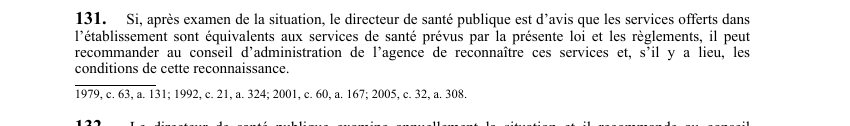

art-131-LSST : recommandation reconnaissance directeur santé
Un article du wiki ⚖️ Recueil législatif
🌐 LegisQuébec · 📄 PDF officiel (page 36)
Texte officiel : capture du PDF

🔗 Ouvrir a cette page : LSST.pdf : page 36 · texte a jour au 26 mars 2024
En bref
Si le directeur de santé publique juge que les services offerts dans l'établissement sont équivalents à ceux prévus par la loi et les règlements. Il s'agit d'une obligation.
- Si les services sont équivalents aux exigences légales et réglementaires.
Voir aussi
- art. 129 : confidentialité dossier médical travailleur · définition : la conservation et le caractère confidentiel du dossier médical sont assurés conformément à la Loi sur les services de santé et les services sociaux; le médecin doit, sur demande, communiquer ce dossier au travailleur ou, avec son autorisation écrite.
- art. 130 : demande reconnaissance services santé · faculté : l'employeur peut, dans les 90 jours de l'entrée en vigueur du règlement applicable, présenter à l'agence régionale une demande de reconnaissance des services de santé existant dans son établissement depuis le 20 juin 1979, avec l'assentiment des représentants des travailleurs.
- art. 132 : examen annuel reconnaissance services · le directeur de santé publique examine annuellement la situation et recommande au conseil d'administration de l'agence d'annuler ou de renouveler la reconnaissance des services de santé, avec les conditions appropriées.
- art. 133 : rémunération personnel services reconnus · à l'exception des professionnels de la santé au sens de la Loi sur l'assurance maladie, le personnel des services de santé reconnus par l'agence est rémunéré par l'employeur, qui assume aussi les coûts des examens, analyses, locaux et équipements.
- ↑ Loi : LSST
Pages qui pointent ici (5)
- art-129-LSST, obligation fiche signalétique Recueil législatif
- art-130-LSST, réglementation Recueil législatif
- art-132-LSST, directeur santé publique examine Recueil législatif
- art-133-LSST, à exception professionnels santé Recueil législatif
- art-185-LMRSST, section V chapitre VIII loi comprenant Recueil législatif